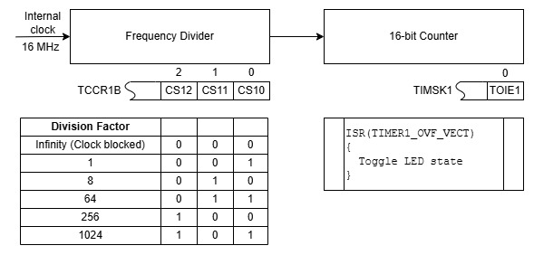
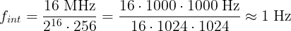

Научившись в самом первом этюде включать и выключать встроенный светодиод, мы сразу перешли к группам и системам светодиодов, не сделав одно важное дело: нужно было послать традиционный привет миру. В «обычном» программировании этот привет имеет буквальный смысл — напечатать фразу Hello World!. Для Arduino же таким приветом традиционно служит мигание встроенным светодиодом.
Мигать светодиодом просто: нужно его зажечь, выждать некоторое время, погасить, выждать, и далее повторять всё это в цикле. Основной вопрос заключается в реализации шага выждать. Проще всего использовать функцию delay(), однако не всё, что просто, правильно и полезно, и использования этой функции мы избегаем. Функция millis(), которая фигурировала в этюде о динамической индикации, лучше, но гораздо полезнее научиться работать со встроенным таймером Arduino. Изучение основ работы с ними на примере мигания светодиодом будет темой этого и ещё нескольких этюдов, а дальше сделаем на встроенном таймере динамическую индикацию и счёт времени.
Таймером в микропроцессорной технике называют аппаратный счётчик, работающий независимо от выполнения основной программы. Таймер может использоваться для отсчёта временных интервалов, подсчёта числа событий, формирования задержек, генерации звука и для многого другого.
В Arduino UNO три таймера: 16-разрядный Таймер 1 и два восьмиразрядных с номерами 0 и 2.
На чертеже показана упрощённая модель Таймера 1. Внутренний тактовый сигнал 16 МГц поступает на вход делителя частоты, коэффициент деления которого задаётся тремя младшими битами регистра TCCR1B. Выходной сигнал делителя поступает на вход 16-разрядного счётчика. Счётчик считает поступившие на его вход импульсы, и каждый раз, когда досчитывает до 65535 и переполняется, (1) сбрасывается; и (2) генерирует прерывание по переполнению, если это разрешено битом TOIE1 в регистре TIMSK1. Получив запрос прерывания, микроконтроллер выполняет программу обслуживания прерывания (Interrupt Service Routine) ISR(TIMER1_OVF_VECT), в которую помещают код управления светодиодом.

Мигать встроенным светодиодом по прерыванию от Таймера 1, с возможностью выбора частоты мигания из нескольких фиксированных значений.
Частота fint прерываний в данной конфигурации 16 МГц / 216 / коэффициент k деления. Если выбрать k=256, то fint будет близка к 1 Гц:

В программе этот коэффициент деления задан в качестве начального и предусмотрена возможность установки требуемого коэффициента деления в команде d=значение (например, для установки коэффициента деления 1024 и, соответственно, частоты прерываний около 1/4 Гц надо будет передать команду d=101).
Программа обслуживания прерывания при каждом вызове считывает бит 5 из PORTB и записывает обратно его инвертированное значение. При каждом прерывании светодиод либо зажигается, либо гаснет, и результирующая частота мигания вдвое ниже частоты прерываний. Таким образом, в рассмотренной конфигурации набор возможных частот мигания следующий: 128 Гц, 16 Гц, 2 Гц, 1/2 Гц, 1/8 Гц (значения приблизительные).
Текст программы содержится в файле Ind_y_Ardu.ino, который можно получить с Github по ссылке.
Как вариант, можно получить с Github весь репозиторий цикла "Ардуино и индикаторы" и выполнить команду
git restore -s builtin21 -- Ind_y_Ardu.ino
Файл Ind_y_Ardu.ino в рабочей области будет перезаписан требуемой версией.